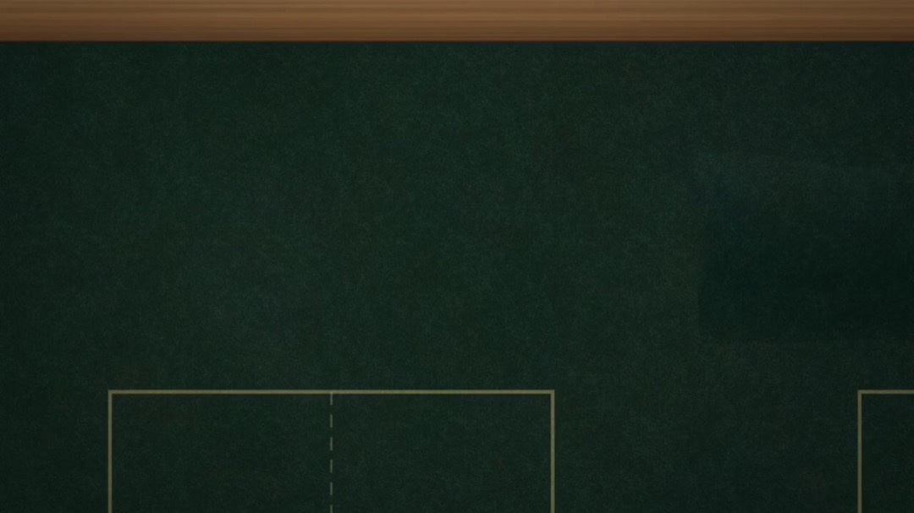
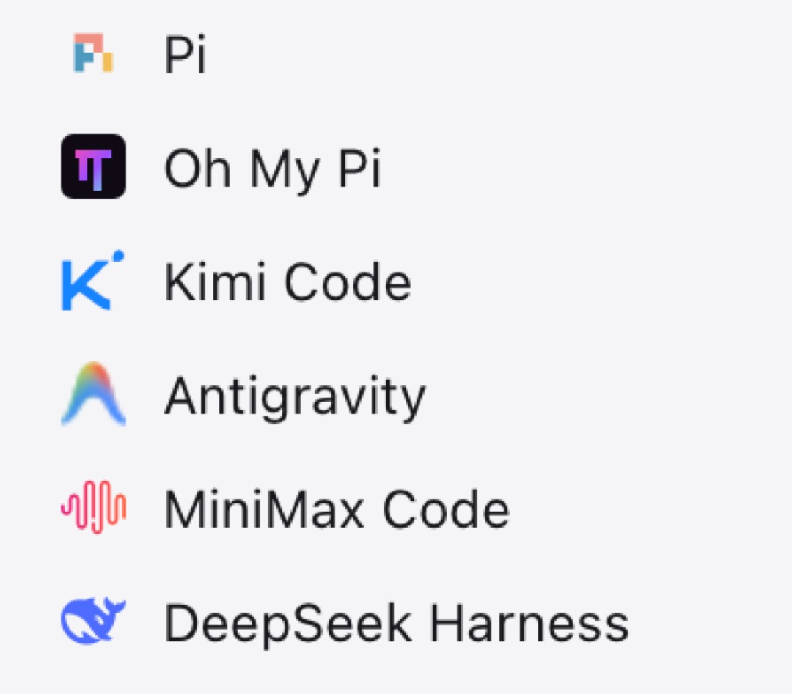
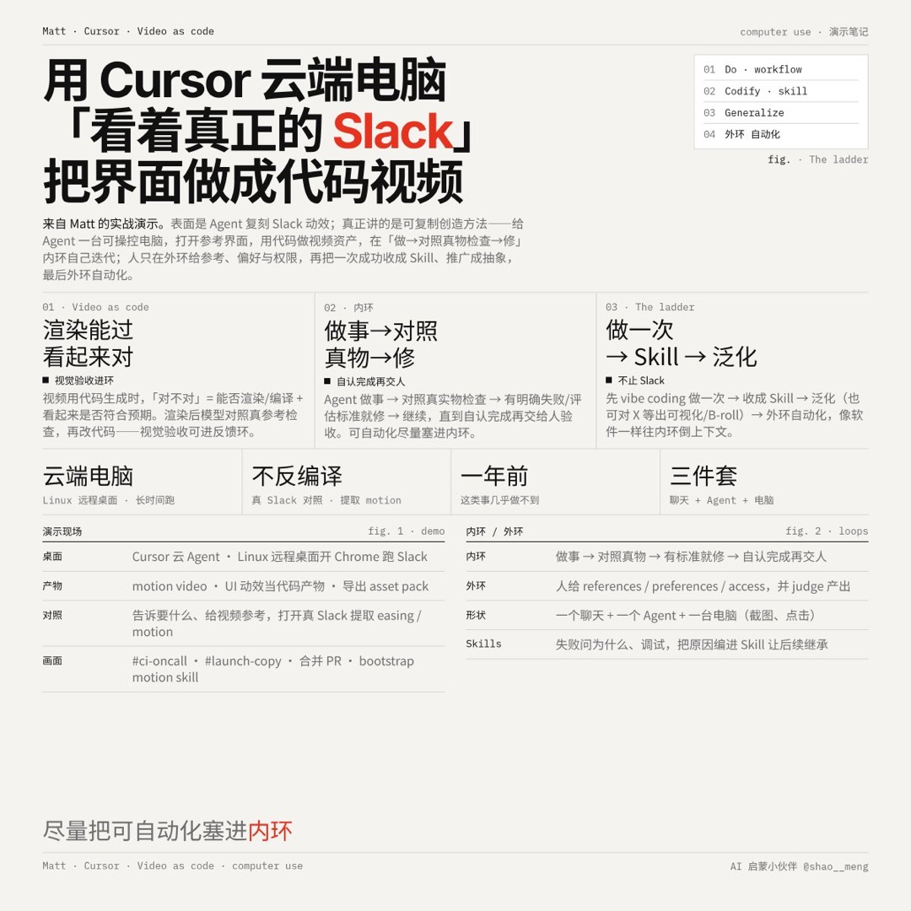
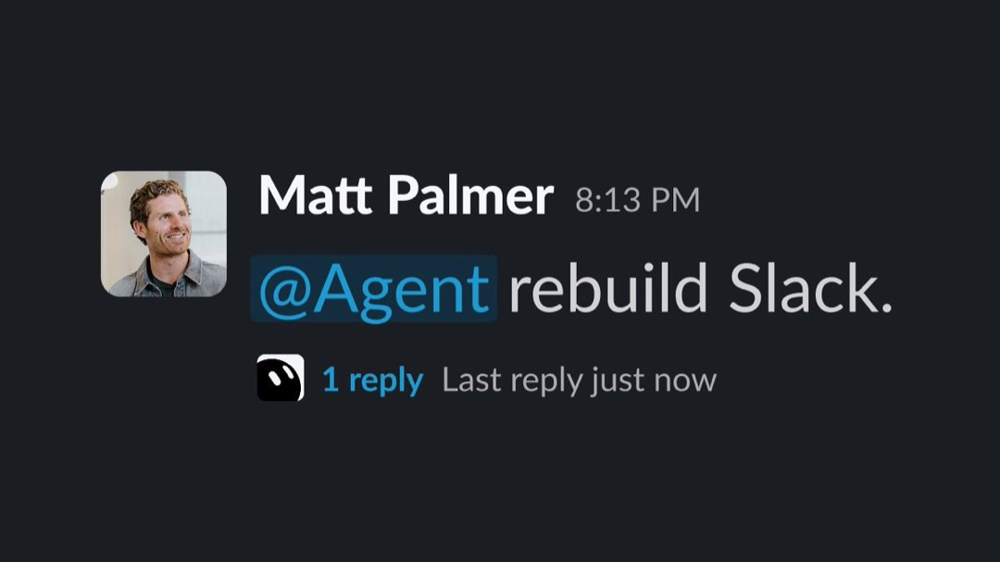
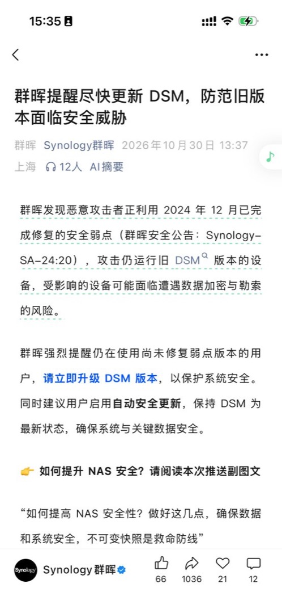
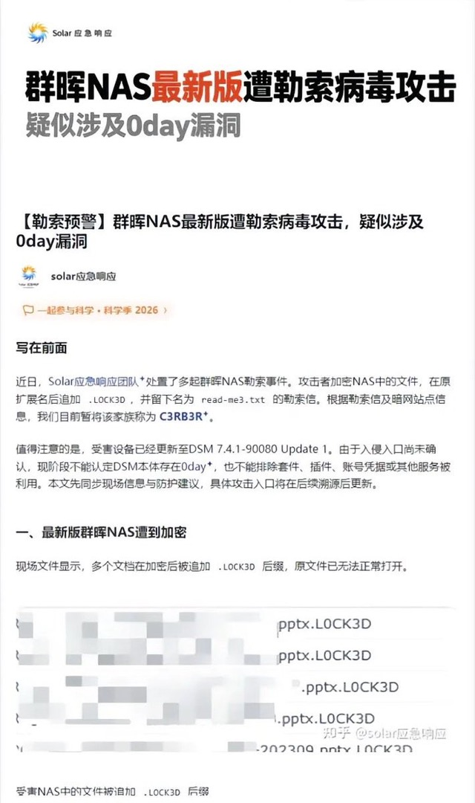
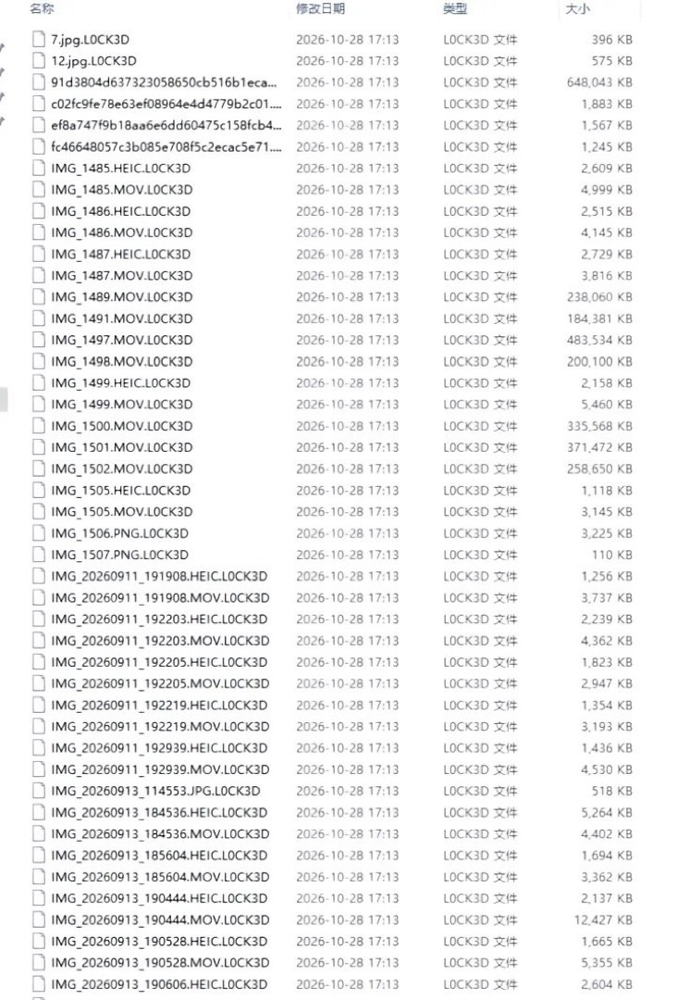
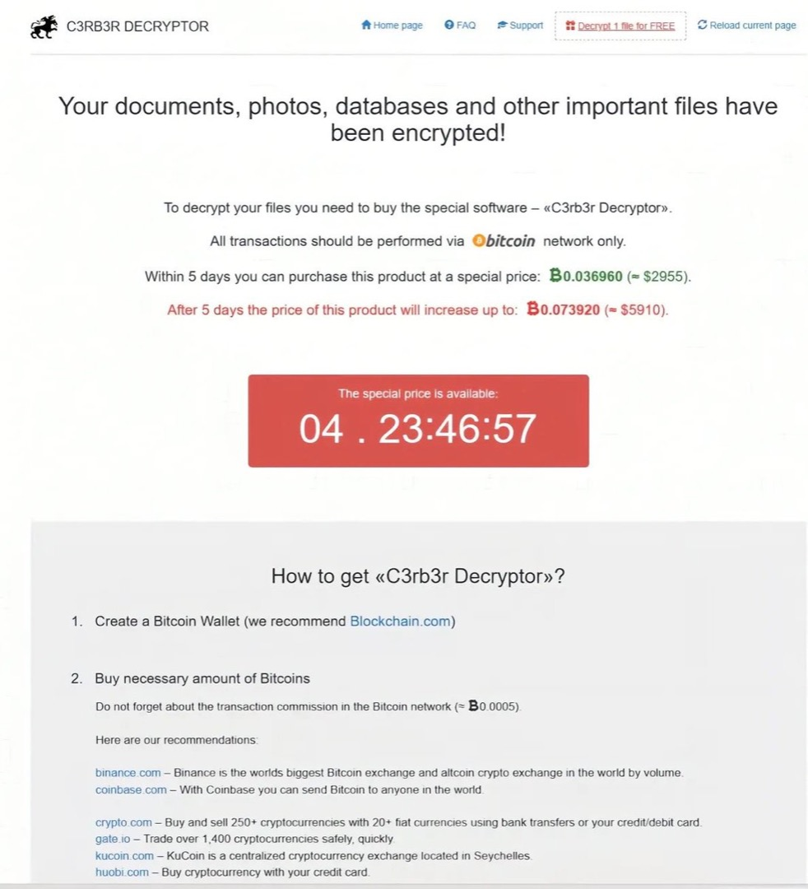
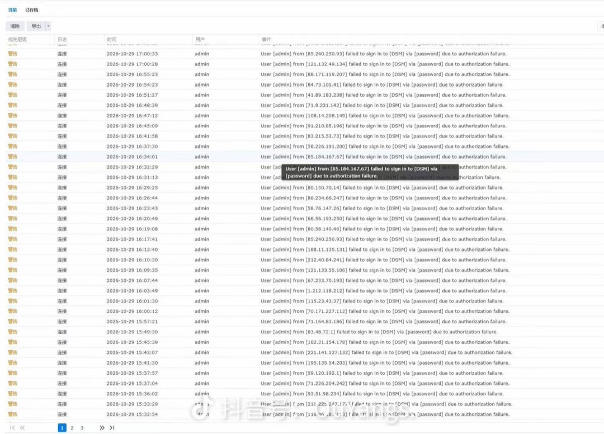

本期速览
01 NamiAgent 从零手写 Agent 教程
03 CC Switch 新增多款 Agent 支持
04 Cursor 对照真物复刻 Slack 界面
06 群晖 NAS 遭勒索病毒批量攻击
07 DeepSeek 二轮千亿融资机构名单
01｜NamiAgent 从零手写 Agent 教程
来源（X） · @antiAIvo · 2026-10-30 21:31
整理成了一个 GitHub 开源项目：NamiAgent
这不只是一个教程，也是一个能在你电脑上跑起来的 Agent：
在指定的工作区里读写文件、执行命令、接入 MCP、记住你是谁
写文件、跑命令前都会先问你，你点头才执行
还带一个本地网页端：
左边看它每一步怎么想、调了什么工具
右边看每次发给模型的完整上下文，一圈圈怎么变长
18 篇图文的原稿和 11 课代码都放进去了，每课一个目录，直接能跑
教程部分，从 100 行的最小循环开始，一课加一个能力：
工具、权限、上下文管理、Skills、MCP、子 Agent、计划、记忆
后 7 篇拿这些零件当尺子，拆解 Claude Code、Codex、Pi、Grok、DeepSeek Harness、OpenClaw
只依赖 openai 一个包，没用任何 Agent 框架
上一个项目 NamiGPT 讲模型本身，这个讲给模型加上手脚
https://github.com/aa1143/NamiAgent
02｜lemo-opuscar 代码批量生成视频
来源（X） · @GitHub_Daily · 2026-10-30 10:30
用它可以直接批量产出视频，而且主要是以写代码方式来做视频，成本可以说极低。
画面用代码逐帧渲染，配乐用免费采样库写，配音走语音合成，全程不用视频生成模型。
内置 66 种现成的影片风格，油画厚涂、浮世绘、黑板粉笔、地铁线路图都有，每种都配了一支用代码做的示范短片。
GitHub：https://github.com/lemomo-ai/lemo-opuscar
装成 Skill 之后直接说「用油画厚涂风格做一支 30 秒的片子，讲我家每天在窗台等我下班的橘猫」，它先问几个定不了的细节就开工。
也能把库里的风格改成自己的，品牌色、字体、Logo 换进去，先出风格图和 15 到 30 秒的样片，满意了再存下来。
一支片子大概做 30 到 60 分钟，风格都是按 Claude Opus 5.5 调出来的，感兴趣的朋友可以试试。

03｜CC Switch 新增多款 Agent 支持
来源（X） · @Jason_Young1231 · 2026-10-30 17:13

04｜Cursor 对照真物复刻 Slack 界面
来源（X） · @shao__meng · 2026-10-30 10:18
来自 @mattyp 的实战演示，整体覆盖：Why → Cursor agents & computer use → Video as code → Slack → 聊天·Agent·电脑 → 内环/外环 → The ladder → Skills → Feedback loops → Recap。
演示看起来是「Agent 复刻 Slack 动效」，真正要讲的是一套可被复制参考的创造方法：给 Agent 一台可操控的电脑，把参考界面打开，让它用代码做视频资产，并在「做 → 对照真物检查 → 修」的内环里自己迭代；人只在外环给参考、偏好与权限，再把一次成功收成 Skill、推广成抽象，最后外环自动化。
演示具体在干什么
Matt 在 Cursor 云 Agent 的 Linux 远程桌面上开 Chrome，跑着 Slack；同时用 Agent 做 motion video（把 UI 动效当代码产物）。强调：没有反编译 Slack，只是告诉 Agent 要什么、给视频参考，并在 Agent 电脑上打开真 Slack，让它对照提取视觉与 easing / motion 模式。画面里能看到复刻出的频道、线程（如 # ci-oncall 里 Agent 查 payments-svc 测试）、以及 # launch-copy 里 @ Marketer 起草 Team Bots 文案等资产；左侧 Agent 还在合并 PR、导出 asset pack、把「刚做完的事」收成 bootstrap motion skill。他说这类事一年前几乎做不到。
Video as code
视频资产用代码生成时，「对不对」变成：能不能渲染 / 编译、看起来是否符合预期。以前视觉验收 Agent 很弱；现在可以做进反馈环，渲染后由模型对照真实参考检查，再改代码。
形状：一个聊天 + 一个 Agent + 一台电脑
多数演示同构：你在聊天里指挥；Agent 有完整桌面控制（截图、点击），云上或本地都行。他偏爱云端（可长时间跑、不怕笔记本休眠），也在试 Mac mini。
内环与外环
· 内环：Agent 做事 → 对照真实物检查 → 有明确失败/评估标准就修 → 继续，直到自认完成再交给人验收。
· 外环：人提供 inputs（references / preferences / access）并 judge 产出（artifacts / screenshots / analytics）。Slack 例：要建 sandbox、给凭证、在电脑上登录，他半开玩笑说可能踩 ToS，「别告诉 Slack HQ」。目标是尽量把可自动化的部分塞进内环。
The ladder（阶梯）
口播路径：先 做一次（自己 vibe coding 聊出来）→ 收成 Skill → 泛化（不止 Slack，也可对 X 等产品出可视化 / B-roll）→ 最后在外环 自动化，像软件一样往内环倒上下文、收高质量输出。画面阶梯标注为 Do（workflow）→ Codify（skill）→ Generalize（abstraction）。
失败怎么办、Skills 为什么重要
用「台灯」类比：已插电、已开开关、灯泡也查过，问题就在插座到灯之间，工程师要找出断点。Agent 失败时同样：问为什么、调试，再把原因 编进 Skill，让后续 Agent 继承，消掉这一类问题。他也把反馈环类比到养植物、健身、学吉他；并说细心与习惯在带 Agent 时会被放大。末尾自称还在打磨这些说法。

引用内容
matt palmer @mattyp
中文译文
Agent们通过观察真实的东西，用代码把Slack重建成视频
0:00 为什么
0:25 @cursor_ai agent与计算机使用
1:03 视频即代码
1:56 Slack
2:54 一次聊天，一个agent，一台计算机
3:53 内循环与外循环
5:04 阶梯
7:47 技能
8:14 反馈循环
10:02 总结
原文
Agents rebuilt Slack as video (using code) by looking at the real thing
0:00 Why
0:25 @cursor_ai agents & computer use
1:03 Video as code
1:56 Slack
2:54 A chat, an agent, a computer
3:53 Inner loop and outer loop
5:04 The ladder
7:47 Skills
8:14 Feedback loops
10:02 Recap

05｜Claude Code 展开折叠粘贴文本
来源（X） · @chenchengpro · 2026-10-30 16:35
06｜群晖 NAS 遭勒索病毒批量攻击
来源（X） · @Blind___Gamer · 2026-10-30 15:37
文末还说如果已经中招了，可以联系群晖官方的技术支持团队，我把联系方式放到评论区，希望你们都用不到。

引用内容
瞎玩菌 @Blind___Gamer
家里有群晖 NAS 的，今天抽几分钟检查一下：文件还能不能打开，有没有陌生后缀，管理后台是不是还直接暴露在公网上。已经有人遇到了文件被加密、留下勒索信的情况。
据 360 发布的分析，今年 10 月以来，他们连续收到多起群晖 NAS 勒索求助，样本被识别为 Cerber 的变种 C3RB3R。文件遭加密后被追加 .L0CK3D 后缀，目录里留下 read-me3.txt 勒索信。网络截图中也出现了 .LOCK3D 的写法。
这已经足够严重。对把家庭照片、工作资料和备份集中存放的人来说，一台 NAS 失陷，可能意味着几类重要数据同时无法使用。
群晖 10 月 29 日的官方回应称，攻击利用了 2024 年 12 月已经修补的旧漏洞，目标是运行旧版 DSM 的设备；360 的分析则指向今年 9 月披露并修复的两个高危漏洞。
网上流传的 Solar 截图还提到，有受害设备运行着 DSM 7.4.1-90080 Update 1。不过截图正文也明确说了，入口尚未确认，不能认定 DSM 本体存在 0day，也不能排除套件、插件、账号凭据或其他服务被利用。
这些材料是否对应同一条攻击链，目前还不清楚。“受害时显示最新版”，不能单独证明“最新版存在新漏洞”。 但入口没查清之前，用户也不能只凭版本号就放心。
🔒 还没发现异常，先做几件能落地的事。
先查路由器和 NAS，把不必要的公网端口映射、自动映射和外网服务关掉。确实需要远程管理，优先通过妥善配置、持续更新的 VPN 访问。改个端口号，替代不了补漏洞。
然后更新 DSM 和套件，停用不用的服务；停用默认 admin，使用独立强密码，开启两步验证、自动封锁和防火墙。
还有一件容易拖着不做的事：检查备份到底能不能恢复。 支持的机型和配置可以启用不可变快照，重要资料再留一份平时断开连接的离线备份。实际恢复几个文件看看，比看到“备份成功”四个字更让人踏实。
🔎 怎么判断自己有没有受到影响？
先看照片、文档能不能正常打开，有没有批量出现 .L0CK3D、.LOCK3D 后缀，以及陌生的 read-me3.txt。再看日志里有没有不认识的成功登录、异常时间访问和批量文件修改。
反过来，没找到这些后缀，也不能宣布绝对安全。这些检查只能帮你初步发现异常。
🆘 已经出现加密文件，先隔离，再处理。
断开受害 NAS 与公网、局域网的连接，暂停相关同步，保护尚未受影响的备份。只关掉公网映射，还不算完成内网隔离。
也要注意，断网不保证停止已经在 NAS 本地运行的加密程序。隔离后，应尽快联系群晖支持或可信的应急团队，判断如何停止加密、保留证据。
网上的“马上拔电”和“绝对别关机”，都别直接当成适用于所有现场的答案。CISA 的建议是优先断网，无法隔离时才考虑关机，同时提醒关机会丢失内存中的取证信息。
保留勒索信、日志、设备版本和异常时间。先别急着初始化、重装或删除加密文件，必要时让专业人员制作镜像。之后再排查入口、重建可信环境，从干净设备更换相关密码，使用确认正常的备份恢复。
不建议支付赎金，付款没有恢复保证。没有备份，也先留住加密数据，可以查询 No More Ransom 是否有适用工具；目前我没有核实到适用于本次具体变种的免费解密方案，不能承诺能救回来。
我觉得，这次最值得重新想一遍的，是我们把多少安全感寄托在了一台设备上。
“我有 NAS”“我开了备份”“我更新过系统”，每句话后面其实都还差一次检查：备份会不会一起被改写？恢复有没有试过？不需要的外网入口有没有关？
群晖也应该继续解释官方旧漏洞结论与最新版受害报告之间的关系，让用户有足够的信息判断风险。
如果今天整台 NAS 的数据都打不开，你手里的备份能恢复到哪一天？




07｜DeepSeek 二轮千亿融资机构名单
来源（X） · @LJL06019 · 2026-10-30 16:10
新进的多是产业资本：兆易创新系的石溪、中芯聚源、吉利、美团、美的、vivo、立讯、小红书、携程，各投 10–30 亿；国家队那边，移动、电信、中金、中信证券、中国人寿各 20–80 亿，国家 AI 产业基金再投 10 亿。两轮累计，国家队约 19%，科技公司约 42%。
半年两轮累计 1500 亿，目标从 500 亿一路超募到 1000 亿；据 The Information，年化营收已过 10 亿美元（API 提价 2.3–4.5 倍还没掉客户）。钱是一回事，DeepSeek 还要求投资方说清楚能给什么数据和业务协同——这轮融资，到底是钱重要，还是背后的数据和算力重要？
#DeepSeek